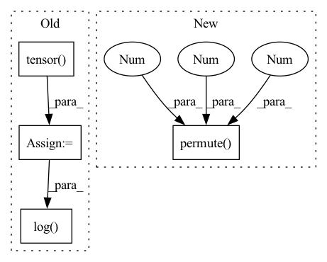

Pattern ID :30360
Before Change
kld_weight = kwargs["M_N"] // Account for the minibatch samples from the dataset
log_p_x_z = ((recons - input) ** 2).flatten(1).mean(-1)
pi = torch.tensor( np.pi, dtype=torch.float)
E_log_q_z = torch.sum(-0.5 * (eps ** 2) - 0.5 * torch.log(2 * pi) - log_var, dim = 1)
E_log_p_z = torch.sum(-0.5 * (z ** 2) - 0.5 * torch.log( 2 * pi) , dim = 1)
// Get importance weights
log_weight = (recons_loss + E_log_p_z - E_log_q_z).detach().dataAfter Change
z = args[4]
eps = args[5]
input = input.repeat(self.num_samples, 1, 1, 1, 1).permute( 1, 0, 2 , 3 , 4 ) //[B x S x C x H x W]
kld_weight = kwargs["M_N"] // Account for the minibatch samples from the dataset
In pattern: SUPERPATTERN
Frequency: 3
Non-data size: 4
Instances Fragment ID: 89835866
Project Name: antixk/pytorch-vae
Commit Name: 692e7a333a9ceb10076a912fbd977f5d4e8e1349
Time: 2020-01-21
Author: anandkrish894@gmail.com
File Name: models/iwae.py
M Class Name: IWAE
N Class Name: IWAE
M Method Name: loss_function(1)
N Method Name: loss_function(1)
M Parent Class: BaseVAE
N Parent Class: BaseVAE
M File Name: models/iwae.py
N File Name: models/iwae.py
M Start Line: 133
M End Line: 153
N Start Line: 139
N End Line: 161
Before Change
predicts = [self.text_process.int2text(sent) for sent in predicts]
targets = [self.text_process.int2text(sent) for sent in targets]
list_wer = torch.tensor(
[self.cal_wer(i, j).item() for i, j in zip(predicts, targets)]
)
wer = torch.mean(list_wer)
if batch_idx % 100 == 0:
self.log_output(predicts[0], targets[0], wer)
self.log("val_loss", loss)
self.log( "val_batch_wer", wer)
return loss, wer
def test_step(self, batch, batch_idx):After Change
outputs, output_lengths = self(inputs, input_lengths)
loss = self.criterion(
outputs.permute(1 , 0 , 2 ) , targets_ctc, output_lengths, target_lengths
)
self.log("test loss", loss) Fragment ID: 89836115
Project Name: manhph2211/vistt
Commit Name: 742be9424d91058a3c3e25adc4db742534fffab3
Time: 2022-08-30
Author: manhph5@vingroup.net
File Name: VASR/local/src/engine/trainer.py
M Class Name: ConformerModule
N Class Name: ConformerModule
M Method Name: validation_step(3)
N Method Name: validation_step(3)
M Parent Class: BaseModel
N Parent Class: pl.LightningModule
M File Name: VASR/local/src/engine/trainer.py
N File Name: VASR/local/src/engine/trainer.py
M Start Line: 72
M End Line: 103
N Start Line: 106
N End Line: 126
Before Change
predicts = [self.text_process.int2text(sent) for sent in predicts]
targets = [self.text_process.int2text(sent) for sent in targets]
list_wer = torch.tensor(
[self.cal_wer(i, j).item() for i, j in zip(predicts, targets)]
)
wer = torch.mean(list_wer)
if batch_idx % 100 == 0:
self.log_output(predicts[0], targets[0], wer)
self.log("test_loss", loss)
self.log( "test_batch_wer", wer)
return loss, wer
def log_output(self, predict, target, wer):After Change
outputs, output_lengths = self(inputs, input_lengths)
loss = self.criterion(
outputs.permute(1 , 0 , 2 ) , targets_ctc, output_lengths, target_lengths
)
self.log("test loss", loss) Fragment ID: 89836128
Project Name: manhph2211/vistt
Commit Name: 742be9424d91058a3c3e25adc4db742534fffab3
Time: 2022-08-30
Author: manhph5@vingroup.net
File Name: VASR/local/src/engine/trainer.py
M Class Name: ConformerModule
N Class Name: ConformerModule
M Method Name: test_step(3)
N Method Name: test_step(3)
M Parent Class: BaseModel
N Parent Class: pl.LightningModule
M File Name: VASR/local/src/engine/trainer.py
N File Name: VASR/local/src/engine/trainer.py
M Start Line: 105
M End Line: 136
N Start Line: 128
N End Line: 148